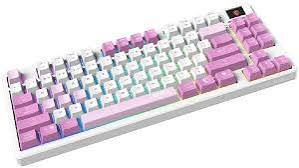

Klaviatuur
Pildil on kujutatud mehaaniline arvutiklaviatuur, millel on mitmevärviline RGB-taustvalgustus. Klaviatuur on peamine sisendseade, mis võimaldab kasutajal sisestada teksti, juhtida arvutiprogramme ja navigeerida operatsioonisüsteemis. Tänapäevases töökeskkonnas tagab ergonoomiline ja hea tagasisidega klaviatuur kiire ning mugava kirjutamise igapäevases töös või mängimisel.
Loe lähemalt: Vikipeedia — Klaviatuur
